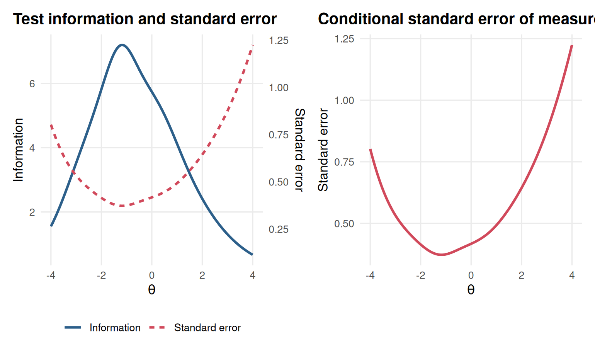
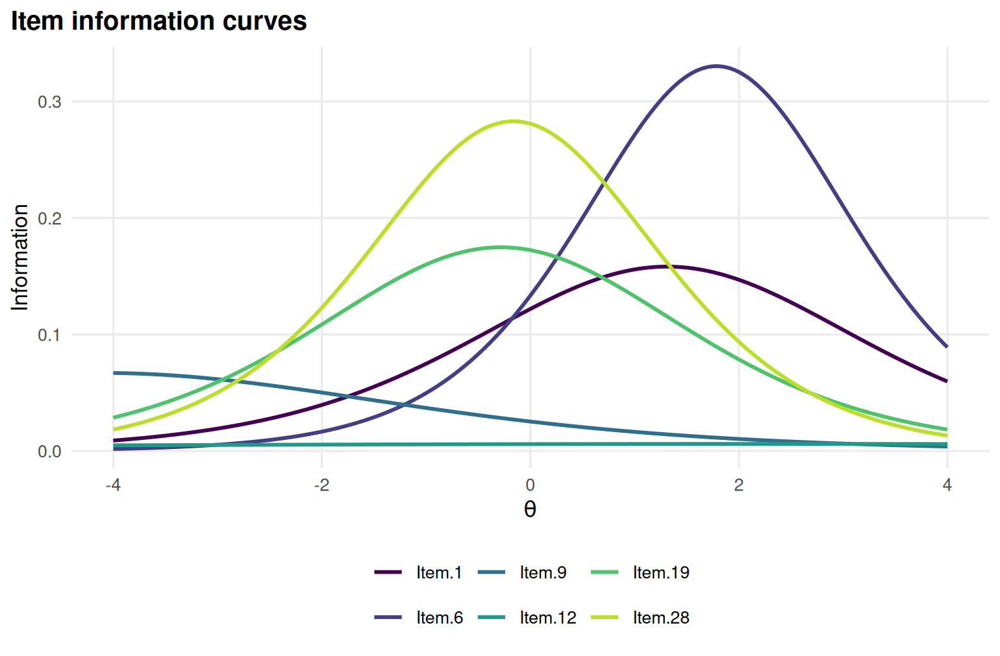
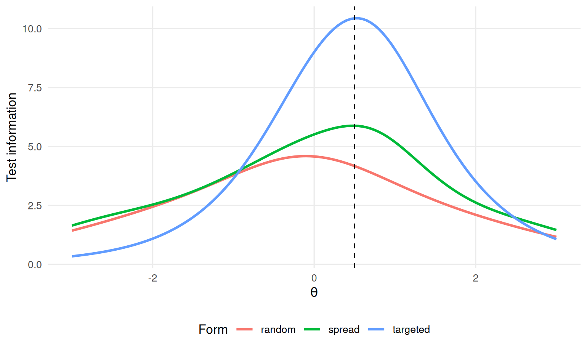

Chapter 6 Information, precision and reliability
Learning goals. After this chapter you can
- read item and test information curves;
- convert information into a conditional standard error of measurement;
- compute marginal and empirical reliability, and explain why a single reliability coefficient hides how precision changes along the scale;
- use information to judge whether a test is well targeted for a decision.
Key terms: item information, test information, standard error of measurement, marginal reliability, targeting, precision.
6.1 The ideas
In classical test theory a test has one standard error of measurement for everyone. In IRT, precision depends on where you are on the scale. An item tells us most about people whose ability is close to its difficulty: for them the outcome is most uncertain, so observing it is most informative. The item information function of a 2PL item is
\[I_j(\theta) = a_j^2 \, P_j(\theta)\,[1 - P_j(\theta)],\]
which peaks at \(\theta = b_j\), where \(P_j = 0.5\), with height \(a_j^2/4\). A steep item gives a lot of information in a narrow range; a flat item a little information over a wide range. For the 3PL the peak is lower and a little above \(b_j\), because guessing makes correct answers less informative.
Information adds up over items. The test information function is the sum of the item information functions, and the conditional standard error of a \(\theta\) estimate is approximately
\[SE(\theta) = \frac{1}{\sqrt{I(\theta)}}.\]
So doubling the information shrinks the standard error by a factor of \(\sqrt{2}\), not 2. A test information of 10 gives \(SE \approx 0.32\), and on a scale with standard deviation 1 that corresponds to a reliability of about \(1 - 0.32^2 = 0.90\) for people at that point.
Two summary reliability coefficients are common:
- Marginal reliability averages the error variance over the assumed population distribution of \(\theta\): \(\rho = 1 - \overline{SE^2}/\sigma^2_\theta\).
- Empirical reliability does the same with the estimated scores and their standard errors in the sample.
Both are useful single numbers, but a test can have a respectable overall reliability and still be imprecise exactly where an important decision is made. That is why we look at the curves.
6.2 Example 1: where does the science test measure well?
# SAT12 science items, scored with the corrected key (item 32 keyed 3).
key <- c(1,4,5,2,3,1,2,1,3,1,2,4,2,1,5,3,4,4,1,4,3,3,4,1,3,5,1,3,1,5,4,3)
resp <- key2binary(SAT12, key)
Figure 6.1: Test information (left) and standard error of measurement (right) for the SAT12 science test under the 2PL.
The test is most informative a little below average ability and loses precision quickly above \(\theta = 1\). The values behind the curves:
theta <- matrix(-3:3)
data.frame(theta = theta[, 1],
information = testinfo(mod, theta),
se = 1 / sqrt(testinfo(mod, theta)))
#> theta information se
#> 1 -3 3.53 0.533
#> 2 -2 5.82 0.415
#> 3 -1 7.12 0.375
#> 4 0 5.74 0.417
#> 5 1 4.12 0.492
#> 6 2 2.41 0.644
#> 7 3 1.31 0.875Each item’s contribution:

Figure 6.2: Item information curves of six SAT12 items.
Items differ a lot. Steep items in the middle of the scale do most of the work; very easy items (such as Item.9) add information only far below average, and flat items (such as Item.12) add almost nothing anywhere.
Reliability:
areainfo() tells us how much of the test’s total information lies in a
range of the scale, here between \(\theta = -1\) and \(\theta = 1\):
areainfo(mod, c(-1, 1))
#> LowerBound UpperBound Info TotalInfo Proportion nitems
#> -1 1 11.4 34.2 0.334 32Suppose the school awards a science prize to students above \(\theta = 1.5\). At that point the standard error is
about half a standard deviation. A student estimated at 1.5 could easily have a true ability of 1.0 or 2.0. The overall reliability of about 0.84 gives a much rosier picture than the precision at the decision point.
6.3 Example 2: designing a test for a decision
Information curves are also a design tool. Imagine a calibrated pool of 90 2PL items for a nursing entrance test, with a pass mark at \(\theta = 0.5\). We compare three 20-item forms built from the pool, without collecting any new data: the information function only needs the item parameters.
# A pool of 90 calibrated 2PL items (a, b), as stored in an item bank.
# No responses are needed: this example works from item parameters only.
set.seed(606)
pool <- data.frame(item = sprintf("N%02d", 1:90),
a = rlnorm(90, 0.15, 0.3),
b = rnorm(90, -0.3, 1.1))A small function computes 2PL information from the formula above:
info_2pl <- function(items, theta) {
sapply(theta, function(t) {
p <- plogis(items$a * (t - items$b))
sum(items$a^2 * p * (1 - p))
})
}Three ways to choose 20 items:
forms <- list(
random = pool[sample(nrow(pool), 20), ],
spread = pool[order(pool$b)[round(seq(1, 90, length.out = 20))], ],
targeted = pool[order(abs(pool$b - 0.5) / pool$a)[1:20], ]
)
grid <- seq(-3, 3, by = 0.05)
curves <- do.call(rbind, lapply(names(forms), function(f)
data.frame(form = f, theta = grid, info = info_2pl(forms[[f]], grid))))
library(ggplot2)
ggplot(curves, aes(theta, info, colour = form)) +
geom_line(linewidth = 1) +
geom_vline(xintercept = 0.5, linetype = 2) +
labs(x = expression(theta), y = "Test information", colour = "Form") +
theme_mirtverse()
Figure 6.3: Test information of three 20-item forms drawn from the nursing pool; the dashed line marks the pass mark.
The targeted form picks items whose difficulty is close to the pass mark, favouring steep ones (dividing by \(a\) ranks steep items first). The spread form covers the whole range evenly, and the random form is what we get by chance. At the pass mark:
sapply(forms, function(f) c(info = info_2pl(f, 0.5), se = 1 / sqrt(info_2pl(f, 0.5))))
#> random spread targeted
#> info 4.17 5.879 10.44
#> se 0.49 0.412 0.31The targeted form has more than twice as much information at the pass mark as the random one, with the same number of items. The price is precision far from the cut: the spread form is better for reporting scores across the whole range. Which is better depends on what the scores are for. A licensing test cares about the pass mark; a progress test cares about everyone. Chapter 11 builds on this idea with automated test assembly and adaptive testing.
6.4 Your turn
- Show, using
info_2pl()and a single item with \(a = 2\), \(b = 0\), that the information peaks at \(\theta = 0\) with height \(a^2/4 = 1\). - In Example 1, how many items like the average SAT12 item would you need to add to bring the standard error at \(\theta = 1.5\) down to 0.35?
- In Example 2, build a 30-item targeted form. How much does the standard error at the pass mark improve over the 20-item targeted form?
- Explain to a colleague why “the test has a reliability of 0.84” is not enough to decide whether it can be used to award the prize.
Solutions
one <- data.frame(a = 2, b = 0)
grid[which.max(info_2pl(one, grid))]; max(info_2pl(one, grid))
#> [1] 0
#> [1] 1
# 2. information needed for SE = 0.35, and the average item information at 1.5
need <- 1 / 0.35^2
have <- testinfo(mod, matrix(1.5))
per_item <- have / 32
ceiling((need - have) / per_item)
#> [1] 50
t30 <- pool[order(abs(pool$b - 0.5) / pool$a)[1:30], ]
1 / sqrt(c(twenty = info_2pl(forms$targeted, 0.5), thirty = info_2pl(t30, 0.5)))
#> twenty thirty
#> 0.310 0.272- Many more items, because the average item adds little information at 1.5. Adding a few hard, discriminating items would be far more efficient than adding average ones.
- Reliability is an average over everybody. The prize decision happens at \(\theta = 1.5\), where the test has much less information than in the middle; what matters is the standard error there.